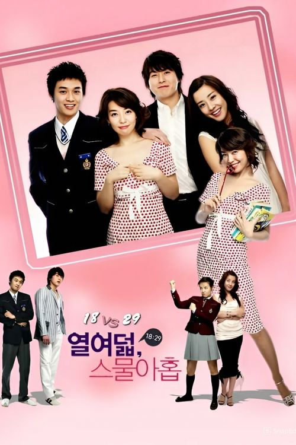

18 против 29

Другие названия: 18 vs. 29 / 18:29 / Eighteen vs Twenty-nine / Yeol-yeo-deol, Seu-mool-a-hob / Yoryodol, Sumurahop / 열여덟 스물아홉
Страна: Южная Корея
Премьера: 7 марта 2005
Телеканал / платформа: KBS2
Продолжительность: 60 мин. / серия
Кол-во серий: 16
Рейтинг:
В ролях: Пак Сон Ён, Рю Су Ён, Пак Ын Хе, Ли Хан Ви, Ли Сан У, Чон Да Хе и др.
Жанры: Драма Комедия Романтика
Главной героине Ю Хе Чан 29 лет. Она замужем за бывшим однокласником, а нынче известным актером, Кан Пон Маном. История открывается ее решением получить развод из-за измены мужа. По пути к зданию суда Ю Хе Чан попадает в автокатострофу и теряет память. Очнувшись в больнице, она думает, что ей 18 лет.